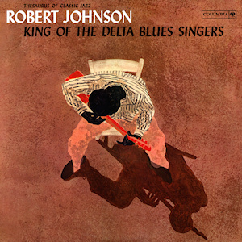

King of the Delta Blues Singers is a compilation album by American Delta blues musician Robert Johnson, released in 1961 on Columbia Records. It is considered one of the greatest and most influential blues releases. In 2020, Rolling Stone ranked it number 374 on its list of the 500 Greatest Albums of All Time.
(from Wikipedia)
